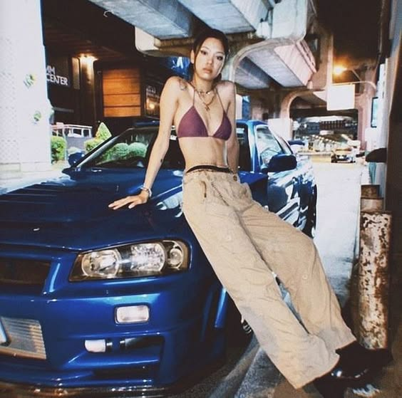
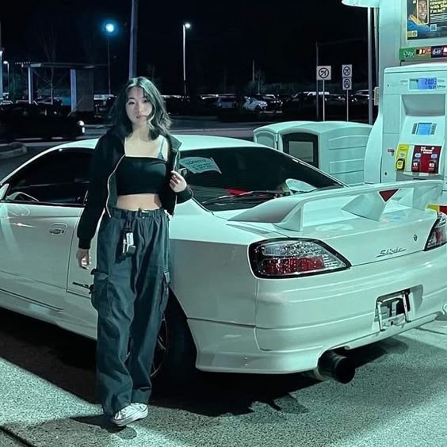
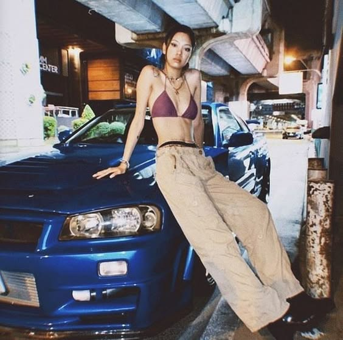
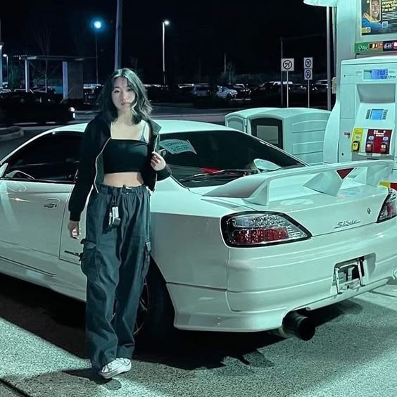

welcome

The
New
Generation
日本
  
 A popular JDM vehicle, the third-generation Mazda RX-7 is known for its rotary engine and sleek aesthetics. The FD3S RX-7 is praised for its exceptional engine performance, lightweight design, and flawless balance. Specifications were not the only thing that helped the Mazda RX-7 climb to fame, popular anime and manga like "Initial D" helped in its rise to fame. Because of its success in motorsport and pop culture, especially drifting, it has become established in JDM culture.
スタイル
JDM culture has a significant global influence since it has expanded beyond its Japanese roots to become a global phenomenon that has redefined passion for automobiles. In addition to bringing iconic vehicles like the Nissan Skyline GT-R, Toyota Supra, and Mazda RX-7 to a worldwide audience, JDM culture has had an impact on motorsports, tuning, and automotive design. The importation of these automobiles, together with their popularity in popular culture like anime, video games, and films, has sparked a passionate worldwide fan base that honors the unique style and technical capability of Japanese automobiles.